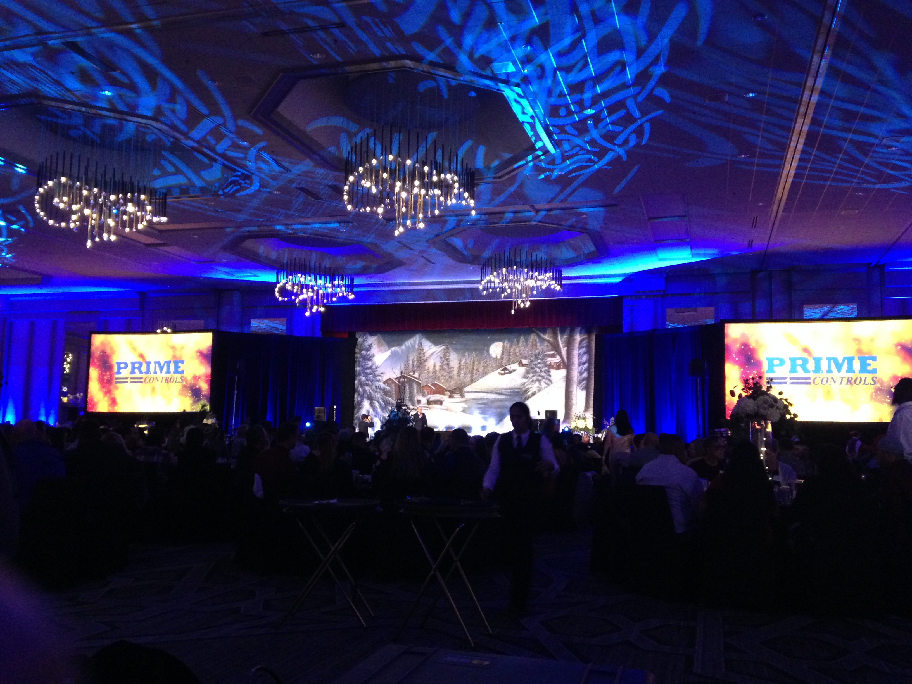

<div class="about-page">
    <div class="about-container">
        
        <div class="top">
            
            <h1>about me</h1>
        </div>

        <div class="subtitle animated slide">
            <div class="subtitle-text">
                Branson Smith
            </div>
            <div class="subtitle-text">
                Sr. Associate Software Developer @ IHS Markit
            </div>
        </div>

        <div class="content">

            <app-about-section 
                [title]="'Values'"
                [timeBeforeLoad]="3500"
            ></app-about-section>

            <div class="section work">
                <div class="section-title">Work</div>
                <div class="section-content work-content">
                    I realized the amazing potential of programming in 2011 when one of my best friends helped me develop my first project on a Saturday night.
                    After that, getting a degree in Computer Science was an obvious choice.
                    Now, between work and home, I am always adding to the technologies, tools, and skills in my toolbelt.
                    At work now, I spend most of my time on enterprise financial service web applications. Which includes web dev, dev ops, and cloud development.
                    Right now for fun, my favorite projects are web apps because of their accessibility and visual components.
                </div>
                <div class="work-triangles">
                    
                    
                    
                </div>
                
            </div>

            <div class="section play">
                <div class="section-title">Play</div>
                <div class="section-content">
                    <div class="mid-left">
                        <div class="carousel-button" (click)="decCarousel()">
                            <i class="material-icons">Chevron Left</i>
                        </div>
                        <div class="carousel-image" *ngFor="let image of carouselImages;">
                            
                        </div>
                        <div class="carousel-button" (click)="incCarousel()">
                            <i class="material-icons">Chevron Right</i>
                        </div>
                    </div>
                    Outside of programming, I enjoy spending time with my loving wife and our loyal dog. 
                        We were both born and raised in Texas, where we still live now.
                        We love taking our dog for walks, going on hikes, and spending time with friends and family. 
                        Some of my hobbies include Programming of course, all kinds of Sports, Video Games, Volunteering, and occasionally helping with A/V Event Production.

                    <div class="bot">
                        <div class="hobbies">
                                
                                
                                
                                
                        </div>
                        <div class="icons">
                            <i class="material-icons">
                                pets
                            </i>
                            <i class="material-icons">
                                favorite
                            </i>
                            <i class="material-icons">
                                sports_esports
                            </i>
                            <i class="material-icons">
                                sports_golf
                            </i>
                            <i class="cross">
                                <div class="vert"></div>
                                <div class="horz"></div>
                            </i>
                        </div>
                    </div>
                </div>
            </div>

        </div>
    </div>
</div>